خط 2: تابع show_temp_view از views.py وارد (import) شده است.
خط 5: یک path اضافه شده است. این path به این معنی است که اگر کاربر صفحه اصلی سایت را باز کرد، show_temp_view از درون فایل views.py اجرا شود. به این path پارامتر name اضافه شده است.
در جنگو هر آدرس (URL) میتواند یک نام داشته باشد تا در هر جایی دیگر، راحتتر به آن ارجاع داده شود. این اسم هیچ تأثیری روی خود آدرس URL ندارد و فقط برای ارجاعدادن استفاده میشود.
پارامتر name در مسیرهای جنگو مانند یک اسم مستعار برای آن آدرس است که به آن URL name هم میگویند.
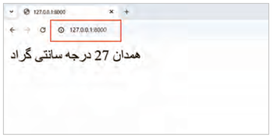
شکل ۱۶: خروجی اولین view جنگو
فایل را ذخیره نمایید و با runserver سرور جنگو را راهاندازی کنید.
صفحه اصلی سایت را در مرورگر باز کنید.
تبریک، شما اولین view جنگو خود را با موفقیت ایجاد کردید (شکل 16).
آشنایی با تابع render
در جنگو برای نمایش بهتر view از فایلهای html استفاده میشود. هر app در جنگو، میتواند فایلهای html مخصوص به خود را بهصورت جداگانه داشته باشد، برای انجام این کار یکپوشه به اسم templates در app ایجاد کنید و فایلهای html را در آن ذخیره کنید. به این فایلهای html در جنگو template گفته میشود.
شکل 17 را مشاهده کنید، مسیر طی شدۀ request (درخواست وب) در جنگو قابلمشاهده است.
طبق تصویر، درخواست ارسالی کاربر، ابتدا به سرور جنگو منتقل شده، سپس با استفاده از url به view مناسب ارسال میشود، هر view با کمک فایل html یا همان template اطلاعات قابل نمایش را آماده کرده و برای کاربر ارسال میکند.
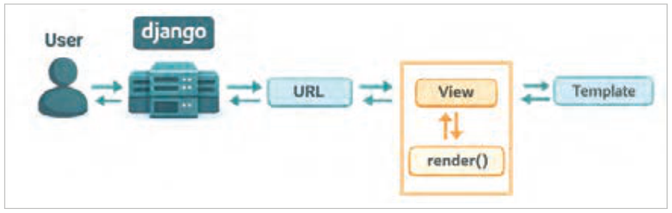
شکل ۱۷: مسیر طی شده یک request در جنگو
صفحه ۲۸۸
همانطورکه در شکل 17 اشاره شده است، تابع render در view میتواند اطلاعات را به فایل html ارسال کند تا به کمک قابلیتهای جنگو، اطلاعات ارسالی به فایلِ html با آن ترکیب شده و به کاربر نمایش داده شود.
در ادامه، در دو مرحله میتوانید یک عدد تصادفی را بهعنوان دمای هوای شهر همدان، با کمک تابع render به یک فایل html ارسال کرده و به کاربر نمایش دهید.
مرحله اول: فایل views.py را باز کنید و show_temp_view را همانند شکل 18 تغییر دهید.
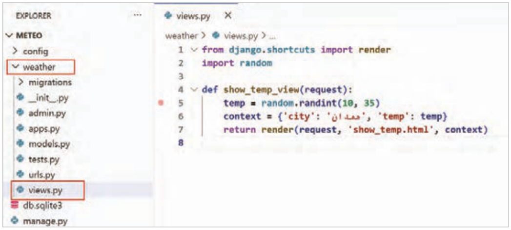
شکل ۱۸: استفاده از تابع render
توضیحات کدها:
خط 1: تابع render از ماژول shortcuts وارد (import) شده است.
خط 2: ماژول random وارد (import) شده است.
خط 5: یک عدد تصادفی بهعنوان دمای هوا برای شهر همدان انتخاب میشود، این اطلاعات در صفحه اصلی سایت نمایش داده خواهد شد.
خط 6: یک دیکشنری شامل نام شهر (city) و دمای شهر (temp) ایجاد شده و در متغیری با نام context ذخیره شده است.
خط 7: از تابع render استفاده شده است. برای این تابع سه آرگومان ارسال شده است. آرگومان اول request است که از ورودی view دریافت شده است. آرگومان دوم نام فایل html موجود در پوشه templates و آرگومان سوم یک دیکشنری است که برای html ارسال شده است.
مرحله دوم: یکپوشه با نام templates در weather app بسازید و یک فایل html با نام show_temp.html درون آن ایجاد کنید.
فایل show_temp.html و هر فایل html دیگری که در این پوشه قرار بگیرد، بهاصطلاح یک template است.
صفحه ۲۸۹
فایل show_temp.html و محتوای آن را همانند شکل 19 ایجاد کنید.
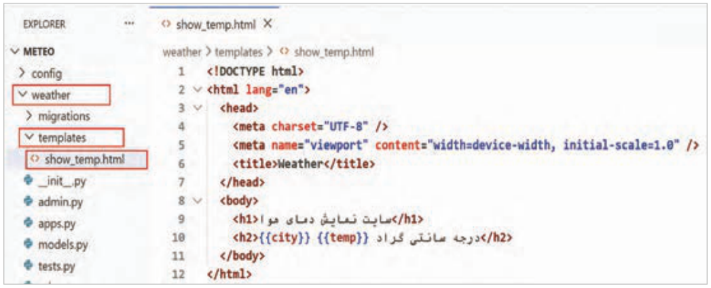
شکل ۱۹: محتویات show_temp.html
توضیحات کدها:
خط 10: از {{city}} و {{temp}} جهتنمایش نام شهر و دمای شهر استفاده شده است. علامت {{}} جهتنمایش متغیرها در template بهکار میرود.
این متغیرها، کلیدهای دیکشنری context هستند که تابع render آن را برای show_temp.html ارسال کرده است.
همانطورکه مشخص است، میتوانید در template از این متغیرها، درون تگهای html استفاده کنید. فایلها را ذخیره کنید. سپس وارد terminal شده و با کلیدهای ترکیبی ctrl + c وب سرور جنگو را متوقف کنید و دوباره با دستور runserver آن را راهاندازی کنید. اکنون صفحه اصلی سایت را refresh کنید. تغییرات جدید را مشاهده خواهید کرد (شکل 20).
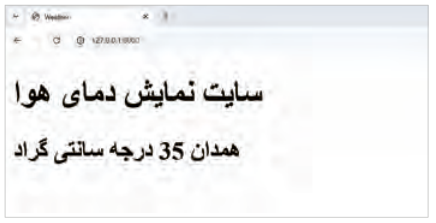
شکل ۲۰: مشاهده تغییرات جدید
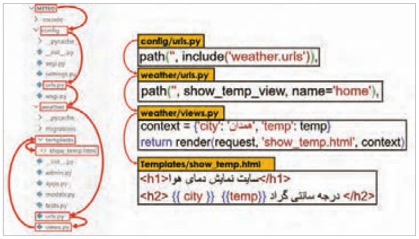
شکل ۲۱: روند نمایش دمای هوا
روند طی شده نمایش دمای هوا، از لحظه ورود درخواست کاربر به سرور جنگو تا نمایش اطلاعات با template، در شکل 21 شبیهسازی شده است.
صفحه ۲۹۰
نمایش دمای هوای واقعی
جهتنمایش دمای هوای لحظهای شهرها میتوانید از سایتهایی مثل https://open-meteo.com استفاده کنید. این سایت ابزاری در اختیار برنامهنویس قرار میدهد تا بتواند دمای هوای شهرهای مختلف را نمایش دهد. سایت open-meteo یک API رایگان دارد که با دریافت طول و عرض جغرافیایی، اطلاعات آبوهوای منطقه موردنظر را در قالب JSON ارائه میدهد.
بهعنوانمثال، اگر آدرس زیر را برای دریافت وضعیت آبوهوای شهر همدان در مرورگر باز کنید، نتیجه با قالب JSON نمایش داده خواهد شد (شکل 22).
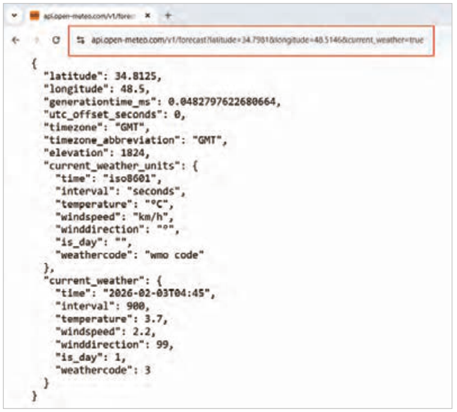
شکل ۲۲: دریافت دمای شهر همدان از API آنلاین
-meteo.com/v1/forecast?latitude=34.7981&longitude=48.5146¤tـ https://api.open weather=true API مانند یک پل بین دو برنامه است. یعنی زمانی که یک برنامه (مثلاً پروژه جنگو) به اینترنت وصل میشود، از طریق API میتواند از یک سایت دیگر داده بگیرد.
در این پروژه، با استفاده از API سرویس open-meteo اطلاعات آب و هوایی دریافت میشود. open-meteo این اطلاعات را بهصورت دادههای منظم در قالب (Json) برمیگرداند، سپس پروژه جنگو آنها را نمایش میدهد.
صفحه ۲۹۱
ارسال مقدار latitude و longitude برای دریافت اطلاعات آبوهوا اجباری است.
اکنون جهتنمایش دمای فعلی شهر همدان تابع show_temp_view را از داخل فایل views.py همانند شکل 23 تغییر دهید.
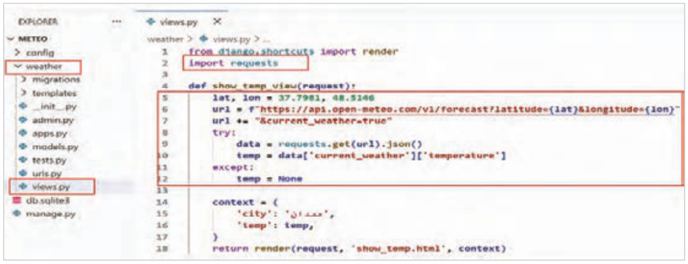
شکل ۲۳: تغییر در view جهت دریافت اطلاعات از API
توضیحات کدها:
خط 2: کتابخانه requests وارد (import) شده است. این کتابخانه باید از قبل نصب شده باشد. با دستور (pip install requests)
خط 5: مقادیر latitude و longitude همان طول و عرض جغرافیایی هستند که برای شهر همدان مشخص شده و در متغیرهای lat و lon ذخیره شدهاند.
خط 6 و 7: متن درخواست بهصورت get و با استفاده از lat و lon آماده شده است.
خط 8: با استفاده از try خطای احتمالی مدیریت شده است، بهعنوانمثال اگر اینترنت وصل نباشد، except در خط 11 مقدار temp را برابر None خواهد کرد و سایت با مشکل مواجه نمیشود.
خط 9: درخواست به سرور open-meteo.com ارسال شده و نتیجه با قالب json در دیکشنری data ذخیره شده است.
خط 10: مقدار temperature از دیکشنری data استخراج شده و در متغیر temp ذخیره شده است.
در فایل show_temp.html تغییراتی برای مدیریت خطا همانند شکل 24 اعمال کنید.
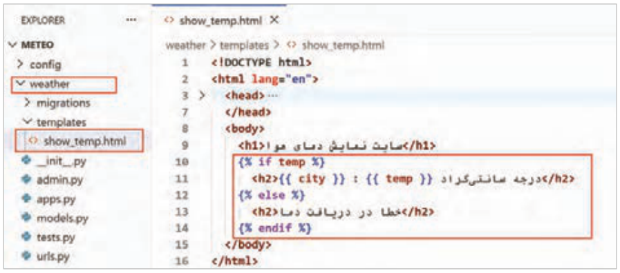
شکل ۲۴: تغییرات در template جهت مدیریت خطای احتمالی
صفحه ۲۹۲
توضیحات کدها:
خط 10: در template از دستور شرطی if استفاده شده است. درصورتیکه temp مقدار داشته باشد و None نباشد، دمای شهر نمایش داده میشود.
خط 13: در صورت بروز خطا، پیغامی مناسب به کاربر نمایش داده میشود.
اکنون فایلها را ذخیره کرده و پس از اطمینان از اتصال به اینترنت، صفحه اصلی سایت را refresh کنید. خروجی صفحه اصلی سایت، همانند شکل 25 خواهد بود (واضح است که دمای هوا برای شما ممکن است متفاوت نمایش داده شود و البته سرعت باز شدن صفحه اصلی سایت، بهسرعت اینترنت شما ارتباط دارد، چون در کدها به open-meteo.com متصل شدهاید.)
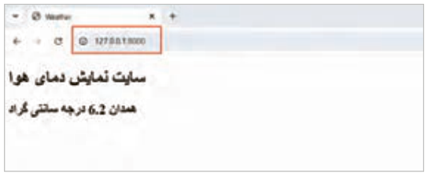
شکل ۲۵: نمایش دمای همدان بهصورت آنلاین
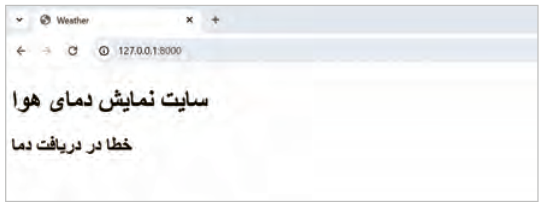
شکل ۲۶: نمایش خطای مناسب به کاربر
درصورتیکه ارتباط با سایت برقرار نشود، خروجی همانند شکل 26 خواهد بود.
Page 287
Explanation of the code:
Line 1: the function path is imported.
Line 2: the function show_temp_view is imported from views.py.
Line 5: a path is added. This path means that if the user opens the main page of the site, show_temp_view from inside the file views.py should run. The parameter name has been added to this path.
In Django each address (URL) can have a name so that it can be referred to more easily anywhere else. This name has no effect on the URL address itself and is only used for referring.
The parameter name in Django's paths is like a nickname for that address, which is also called the URL name.
Figure 16: The output of the first Django view
Save the file and start the Django server with runserver.
Open the main page of the site in the browser.
Congratulations, you have successfully created your first Django view (Figure 16).
Getting to know the render function
In Django, html files are used to show a view better. Each app in Django can have its own html files separately; to do this, create a folder named templates in the app and save the html files in it. These html files are called templates in Django.
Look at Figure 17; the path a request (a web request) goes through in Django can be seen.
According to the picture, the request sent by the user is first passed to the Django server, then, using the url, it is sent to the suitable view; each view, with the help of an html file, that is the template, prepares the displayable information and sends it to the user.
Figure 17: The path a request takes in Django
Page 288
As Figure 17 shows, the function render in the view can send information to the html file so that, with the help of Django's capabilities, the information sent to the html file is combined with it and shown to the user.
Next, in two steps you can send a random number as the air temperature of the city of Hamedan to an html file with the help of the function render and show it to the user.
First step: open the file views.py and change show_temp_view as in Figure 18.
Figure 18: Using the function render
Explanation of the code:
Line 1: the function render is imported from the module shortcuts.
Line 2: the module random is imported.
Line 5: a random number is chosen as the air temperature for the city of Hamedan; this information will be shown on the main page of the site.
Line 6: a dictionary including the name of the city (city) and the temperature of the city (temp) is created and stored in a variable named context.
Line 7: the function render is used. Three arguments are sent to this function. The first argument is request, which was received from the input of the view. The second argument is the name of the html file in the templates folder and the third argument is a dictionary that is sent to the html.
Second step: make a folder named templates in the weather app and create an html file named show_temp.html inside it.
The file show_temp.html and any other html file placed in this folder is, as the term goes, a template.
Page 289
Create the file show_temp.html and its content as in Figure 19.
Figure 19: The content of show_temp.html
Explanation of the code:
Line 10: {{city}} and {{temp}} are used to show the name of the city and the temperature of the city. The sign {{}} is used to show variables in a template.
These variables are the keys of the dictionary context, which the function render sent for show_temp.html.
As is clear, you can use these variables in the template inside html tags. Save the files. Then enter the terminal and stop the Django web server with the key combination ctrl + c and start it again with the command runserver. Now refresh the main page of the site. You will see the new changes (Figure 20).
Figure 20: Seeing the new changesFigure 21: The process of showing the air temperature
The process followed to show the air temperature, from the moment the user's request enters the Django server to showing the information with the template, is simulated in Figure 21.
Page 290
Showing the real air temperature
To show the instantaneous air temperature of cities you can use sites such as https://open-meteo.com. This site gives the programmer a tool to show the air temperature of different cities. The site open-meteo has a free API that, by receiving the longitude and latitude, gives the weather information of the wanted region in JSON format.
For example, if you open the following address in the browser to get the weather of the city of Hamedan, the result will be shown in JSON format (Figure 22).
Figure 22: Getting the temperature of the city of Hamedan from an online API
-meteo.com/v1/forecast?latitude=34.7981&longitude=48.5146¤t https://api.open weather=true An API is like a bridge between two programs. That is, when a program (for example the Django project) connects to the internet, it can get data from another site through the API.
In this project, weather information is received using the API of the service open-meteo. open-meteo returns this information as organised data in the (Json) format, and then the Django project shows it.
Page 291
Sending the values of latitude and longitude to receive the weather information is compulsory.
Now, to show the current temperature of the city of Hamedan, change the function show_temp_view inside the file views.py as in Figure 23.
Figure 23: Change in the view to receive information from the API
Explanation of the code:
Line 2: the library requests is imported. This library must be installed beforehand. With the command (pip install requests)
Line 5: the values latitude and longitude are the geographic latitude and longitude specified for the city of Hamedan and stored in the variables lat and lon.
Lines 6 and 7: the request text is prepared as a get request using lat and lon.
Line 8: a possible error is managed using try; for example if the internet is not connected, the except in line 11 will make the value of temp None and the site does not run into trouble.
Line 9: the request is sent to the server open-meteo.com and the result in json format is stored in the dictionary data.
Line 10: the value of temperature is extracted from the dictionary data and stored in the variable temp.
In the file show_temp.html make changes to manage errors as in Figure 24.
Figure 24: Changes in the template to manage a possible error
Page 292
Explanation of the code:
Line 10: in the template the conditional statement if is used. If temp has a value and is not None, the temperature of the city is shown.
Line 13: if an error happens, a suitable message is shown to the user.
Now save the files and, after making sure of the internet connection, refresh the main page of the site. The output of the main page of the site will be as in Figure 25 (clearly, the air temperature may be shown differently for you, and of course the speed of opening the main page of the site depends on your internet speed, because in the code you have connected to open-meteo.com.)
Figure 25: Showing the temperature of Hamedan onlineFigure 26: Showing a suitable error to the user
If the connection with the site is not made, the output will be as in Figure 26.